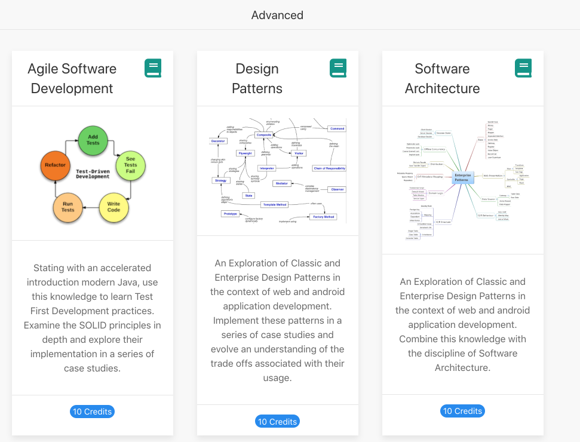
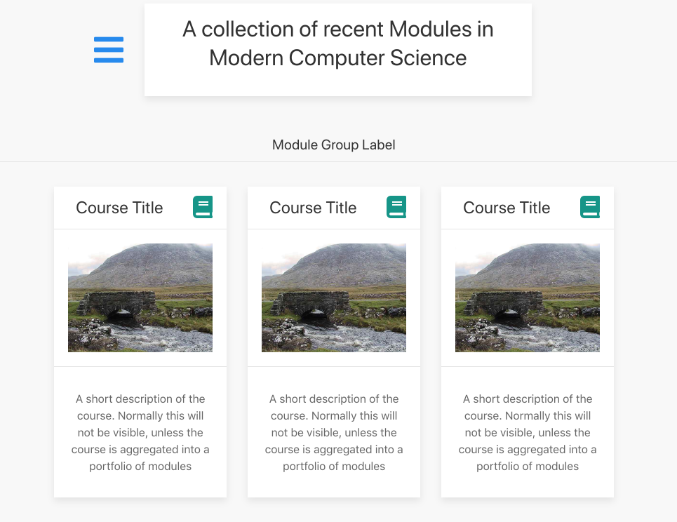

Objectives
Multiple modules can be integrated into a portfolio, which can be further organised into categories.
Portfolio Example
Visit this site here:
This is a portfolio of modules built with tutors. Each card in the above is a full module. Each module is navigable as before, except each course 'home' page has a slightly different header:

This will permit navigation back to the Portfolio 'home'.
Notice also that, in the Portfolio Home, modules are grouped and labeled:
Group 1

Group 2

Group 3

Portfolio Example
The easiest way to explore portfolios is to have tutors generate a set of starter courses, and automatically aggregate them.
Create an empty folder - called portfolio below (but can be any name) - and use tutors to create three new courses:
tutors --new
tutors --new
tutors --newiMac:portfolio edeleastar$ tutors-ts --new
tutors-ts course web generator: 2.5.0
Creating new template course...
Cloning into 'tutors-starter-0'...
Next steps...
cd into tutors-starter-0 and run "tutors" again
This will generate the course web in "tutors-starter/public-site"
iMac:portfolio edeleastar$ tutors-ts --new
tutors-ts course web generator: 2.5.0
Creating new template course...
Cloning into 'tutors-starter-1'...
Next steps...
cd into tutors-starter-1 and run "tutors" again
This will generate the course web in "tutors-starter/public-site"
iMac:portfolio edeleastar$ tutors-ts --new
tutors-ts course web generator: 2.5.0
Creating new template course...
Cloning into 'tutors-starter-2'...
Next steps...
cd into tutors-starter-2 and run "tutors" again
This will generate the course web in "tutors-starter/public-site"
iMac:portfolio edeleastar$This will generate a folder structure like this:

Each is a standalone course, and individual public-site-uk folders can be generated by running tutors in each folder.
Tutors can also be run in the portfolio folder itself:
tutors-ts
tutors course web generator: 1.4.0
- tutors-starter-0
- tutors-starter-1
- tutors-starter-2
Topic 1
Talks:
....
....This will generate a public-site-uk in as a subdirectory of portfolio:

... and this version is an aggregate of the three courses:

Each of these is an individual module - and will be linked to the publicly hosted course web as defined in the properties.yaml file in each course.
Portfolio Structure
Tutors will have generated a portfolio.yaml file like this:
portfolio.yaml
title: 'A collection of recent Modules in Modern Computer Science'
credits: 'Department of Computing & Mathematics, WIT'
courseGroups:
- title: 'Module Group Label'
modules:
- tutors-starter-0
- tutors-starter-1
- tutors-starter-2This can be edited as you please - to customise the title, credits and also module groups.
Try the following as an exercise - generate 2 more starter modules:
tutors --new
tutors --newYou should have 5 starter courses now:
- tutors-starter-0
- tutors-starter-1
- tutors-starter-2
- tutors-starter-3
- tutors-starter-4
Regenerate, and inspect the portfolio home.
Looking at portfolio.yaml - it will have been revised:
title: 'A collection of recent Modules in Modern Computer Science'
credits: 'Department of Computing & Mathematics, WIT'
courseGroups:
- title: 'Module Group Label'
modules:
- tutors-starter-0
- tutors-starter-1
- tutors-starter-2
- tutors-starter-3
- tutors-starter-4We can restructure this to express different subgroups (next step).
Module Grouping
This is the current portfolio.yaml:
title: 'A collection of recent Modules in Modern Computer Science'
credits: 'Department of Computing & Mathematics, WIT'
courseGroups:
- title: 'Module Group Label'
modules:
- tutors-starter-0
- tutors-starter-1
- tutors-starter-2
- tutors-starter-3
- tutors-starter-4Change it to this:
title: 'A collection of recent Modules in Modern Computer Science'
credits: 'Department of Computing & Mathematics, WIT'
courseGroups:
- title: 'Alpha Group'
modules:
- tutors-starter-0
- tutors-starter-1
- tutors-starter-2
- title: 'Beta Group'
modules:
- tutors-starter-3
- tutors-starter-4Regenerate the portfolio again. This time the portfolio home should reflect the revised grouping.
The yaml file is sensitive to column positions, so make sure you indent (with spaces) as shown in the above examples.
The summary and images are located in each course folder as:
- course.md
- course.jpg/img
In addition, credits + url are read from the properties file:
...
courseurl : https://wit-tutors.github.io/tutors-starter-public/
credits : Your Name, WIT
...Exercises
Exercise 1: mbignore
For the course download in Exercise 3 above, open the file mbignore
mbignore
#topic-01-simple
#topic-02-varied
#topic-03-media
#topic-04-units
topic-05-nextThis names all of the topics - most are commented out (the '#' symbol), except the last one. Place a '#' in front of this - and rebuild the course.
You should see an additional topic. Any of the topics can be included/excluded as needed.
Exercise 2: Private Site
Leaving the above mbignore in place, run tutors again with this flag:
tutors-ts -pThis will generate new private-site-uk folder. This version will include all topics, regardless of the contents of mbignore.
This last scenario can be useful for selectively publishing a course for public consumption, but privately working on later, unpublished, topics.